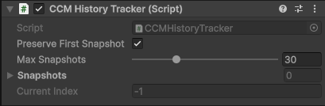
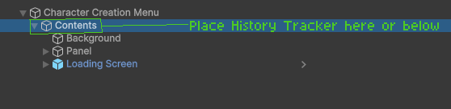

History Tracking System
The History Tracking System tracks every change made to the character in the Character Creation Menu whlie open. Changes can then be looked through and undone at anytime.
Features Overview
| Feature | Description |
|---|---|
| Automatic Tracking | Every change to the character can be recorded as a snapshot. |
| Undo/Redo | Step backward or forward through the list of changes made to the character. |
| Direct Selection | Select any snapshot to instantly restore the character. |
| Snapshot Limit | Configurable maximum number of snapshots (1-100, default = 30). |
History Tracker Component
Introducing the CCM History Tracker component.
This component will track every time a layer on the character is changed and record the change as a snapshot.
- A snapshot contains all information required to restore a character to the exact state it was in when the snapshot was taken.
- Snapshots are saved in a list with newest entries added to the end of the list.
- Max Snapshots can be set anywhere between 1-100 (Default is 30).
- When the max amount of snapshots is met, oldest snapshots will start being replaced.
- The Preserve First Snapshot bool can be toggled which will stop the first snapshot created from being deleted or replaced.

Component Placement
The CCM History Tracker component should be placed inside the Character Creation Menu Contents.
This is the Menu Contents GameObject the Character Creation Menu Manager component references.

Integrations
Additional UI elements which integrate with the History Tracking System.
Undo/Redo Buttons
Buttons for un-doing or re-doing changes made to the character.
History Panels
Panels which display every change made in a clean list.